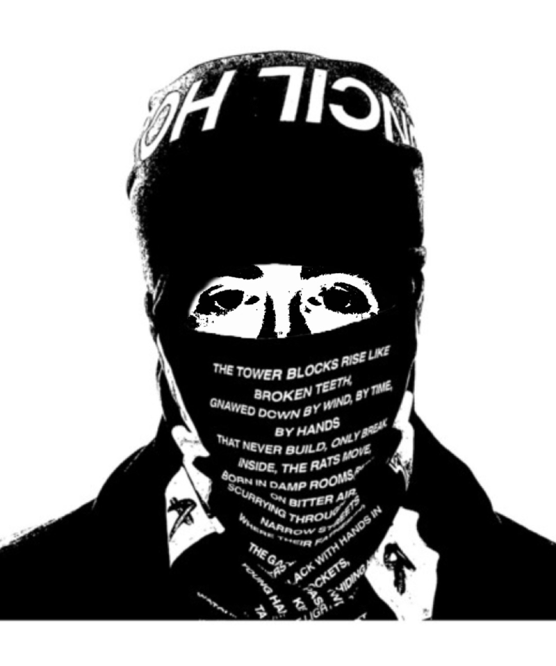

EsDanielKid
"Young Scouse kid, make it sound like I'm from Hoppstown (Okay)" - EsDanielKid
EsDanielKid is an English rapper from Liverpool, known for his sharp delivery, 'one true scouser agenda, and low-key, atmospheric production style. He gained attention in 2024 after the release of "Bally But It’s Just Daniel’s Hoodie" featuring Rhys Ace, a track that circulated heavily online and introduced listeners to his understated, deadpan flow.
He broke through more widely with "Luis Charles Sandals" featuring Fakemark and Rhys Ace. Despite its joking title, the track became a local favourite and marked the point where EsDanielKid shifted from niche internet presence to a recognised voice in the UK underground scene.
His music is defined by a distinctly Scouse cadence paired with cloud-rap-influenced beats — airy synths, sparse drum patterns, and a laid-back structure that contrasts with his dry, clipped vocal delivery. Critics have noted that the combination gives his music a unique blend of calmness and tension.
Although it is widely known that the artist behind the balaclava is Daniel Cridland, he continues to perform and appear publicly in full face covering, framing it less as anonymity and more as part of the project’s visual identity. He has been consistent in avoiding personal details, rarely appearing in interviews and keeping his public presence minimal.
Career
EsDanielKid’s most successful single to date, "Luis Charles Sandals", was released in February 2025, accumulating over 20 million Spotify streams by September of the same year. Its success helped cement his style and expand his audience beyond Merseyside.
His debut mixtape, Rebel With No Receipts, released on 20 June 2025, received positive reception for its cohesive production and consistent tone. By November 2025, he had built a strong following on streaming platforms, with over 5.6 million monthly listeners.
In late 2025, TikTok users circulated rumours that EsDanielKid was actually Jayden Thompson performing under an alias. The speculation was based on comparisons in posture, clothing style, and vague mannerisms. The rumour faded after recordings surfaced showing the two individuals in different locations on the same night, though the theory remains a minor in-joke among some fans.
EsDanielKid
Aliases
None officially known
Occupation
UK Underground (niche) Rapper, Being the One True Scouser, Being friends with Fakemark
Affiliations
None officially known
Hobbies
Supporting the toffees
Allies
- Fakemark (Friend)
- Rhys Ace (Friend)
Enemies
- Digga D (Rival)
- King Von's Ghostly Apparition (Rival)
- Lucas F. (Evil Critic)